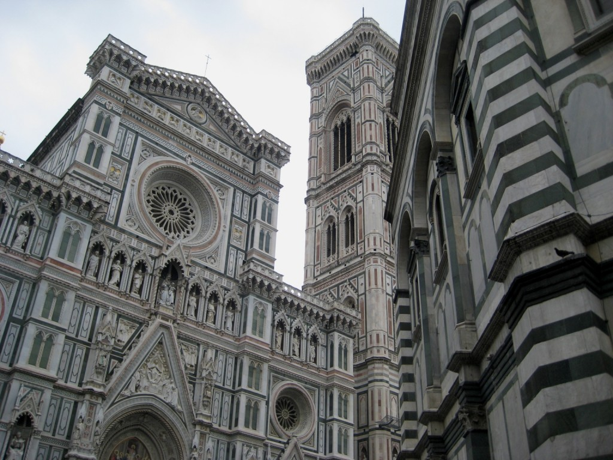
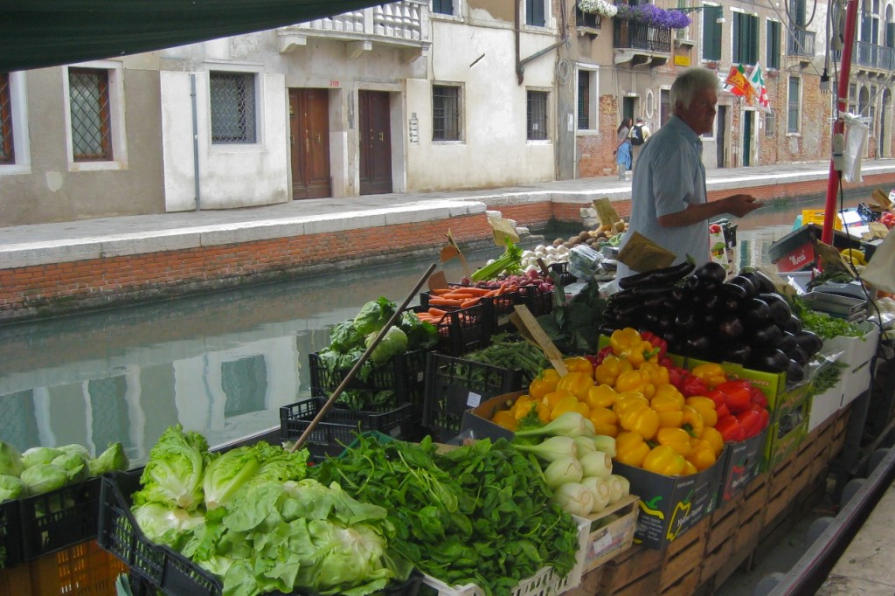
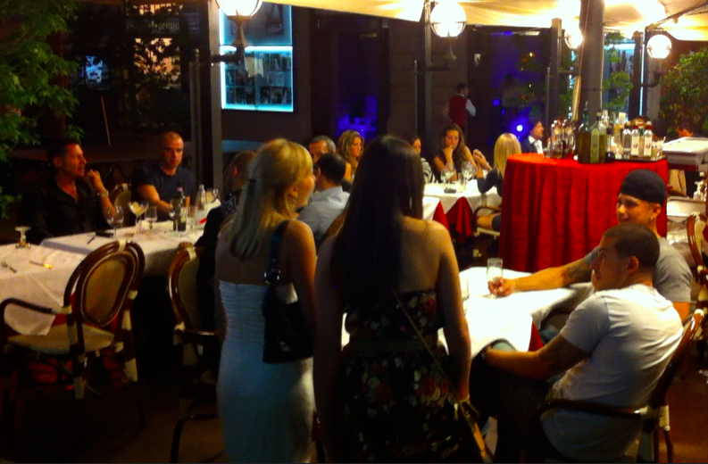
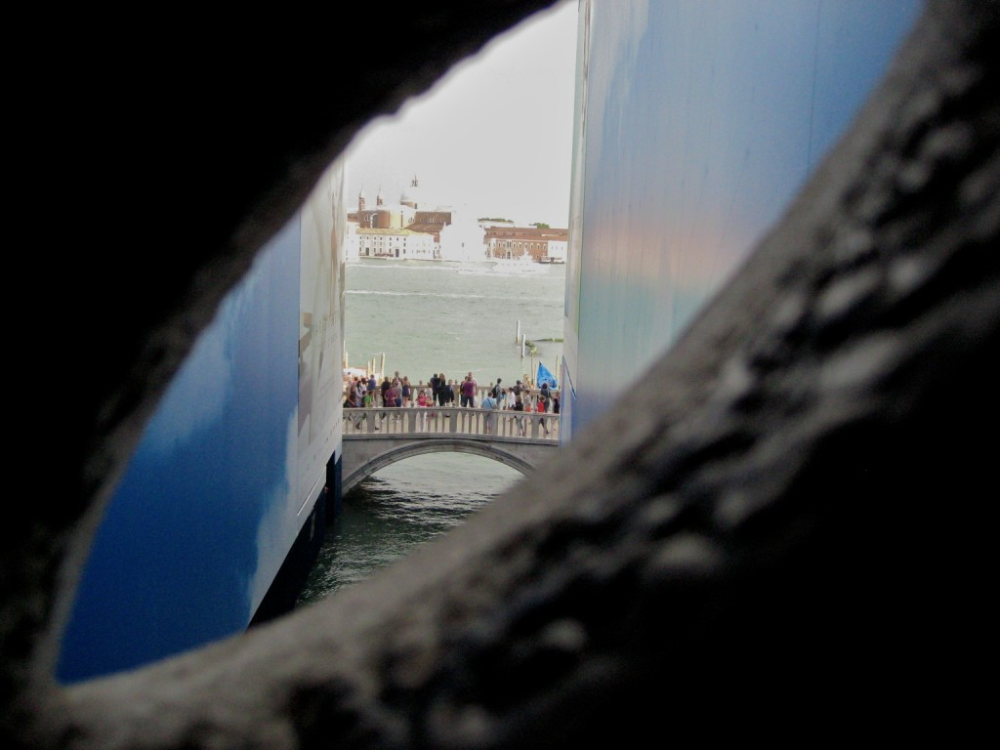
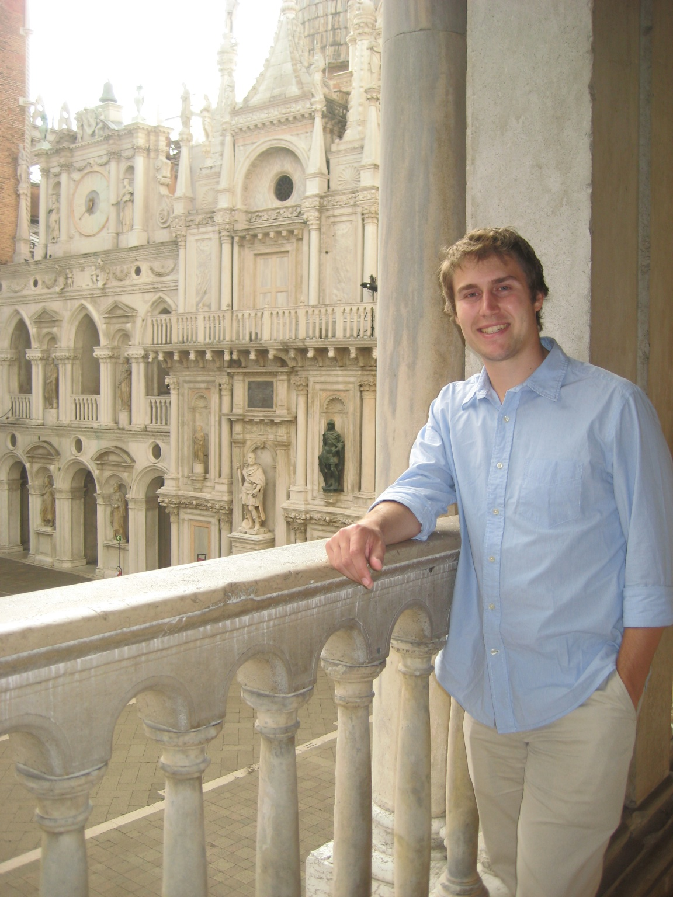

Trying to get a lot of posts up in a short amount of time – here are some pictures from Florence and Venice!
Florence:

Flowers and Florence

Motorcycles and the Ponte Vecchia

Hannah and her next car.

Paper Store! Italy is famous for its paper products.

Hannah marching towards town



The impressive Duomo cathedral, baptistry, and bell tower.


Our group saw the camera crew and Kayt and Katie-lee ended up talking to Jersey Shore people. #nbd

According to Bill Bryson Florence had annually 14 tourists to every 1 resident. That was 20 years ago. Signs like this are unfortunately required in the city center.

And after a few days we were off to Venice where the tourist to resident ratio in the middle of tourist season is 60:1. Explained a lot about our experience there.

Venice Grand Canal!


Hannah and Evan on the Rialto Bridge.

Fresh produce in Venice comes, like all things, via boat

The Bridge of Sighs at the prison next to the Doge Palace. This was the last view that prisoners had before being taken to hear their sentence. I doubt there were as many tourists, though.

Evan at the Doge Palace with a view of the chapel behind him

Our last night in Venice